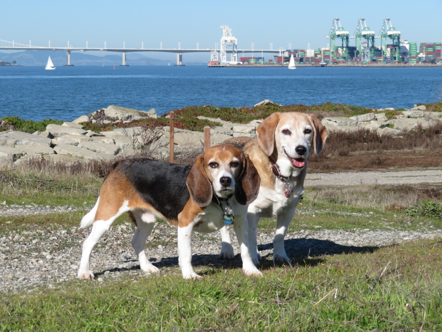

<--Previous Up Next-->

Looking slightly east of north to where Oakland's Outer Harbor ends at the San Francisco border, just to the left of the white crane.
Huxley Beagle sanfrancisco Wallace Beagle